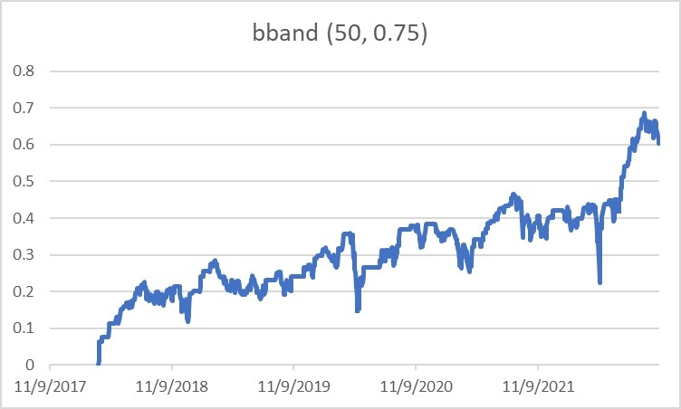
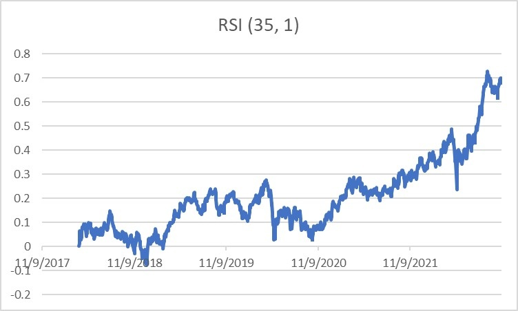
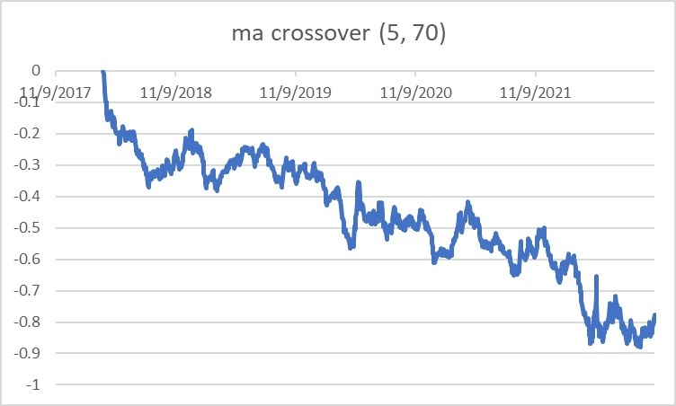
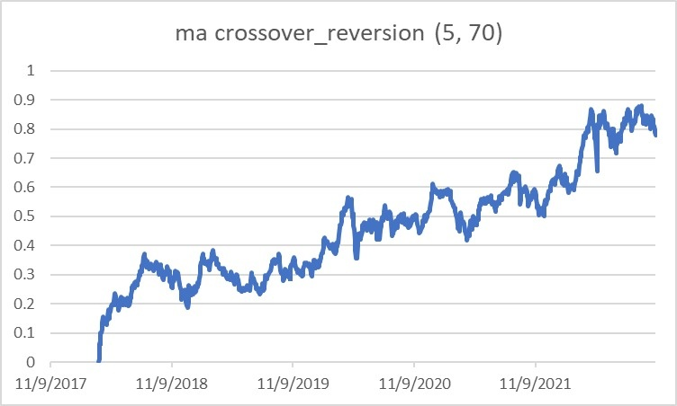
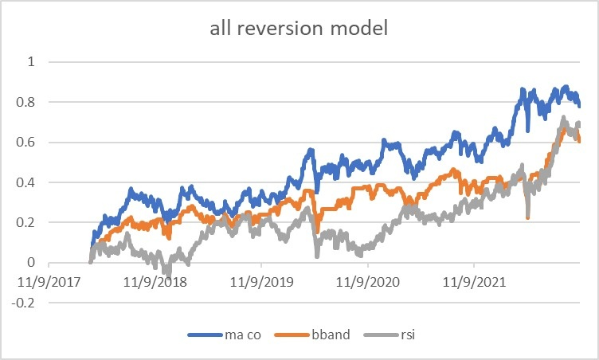
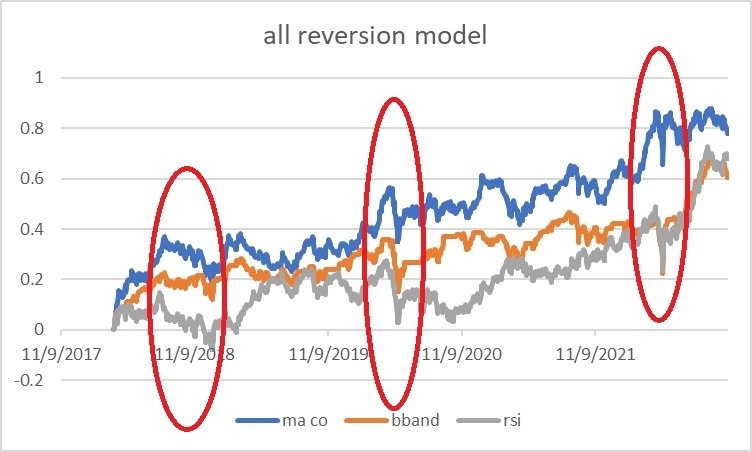

很多人學投資都會以為分析方法只有兩種：基本分析及技術分析，然後花幾年時間研究，到頭來卻是連連虧損。當然，我也不例外，幸好當時年少，因此虧掉的本金並不多。
想當年，我整個中學時光都花在技術分析，每天放學後回家就是畫圖，看技術指標；後來上大學時自學了Backtest後，則天天通宵走堂Backtest圖表及技術指標，前後一共也花了足足兩三年時間，才發現技術指標並不能有效產生高回報。
這次專欄就以數據角度，來與大家分享一下技術分析的終極奧義。
首先，必須明白三點：
1. 技術分析純粹看價及量兩個因子
2. 價格因子的操作方法只有兩種：momentum及reversion
3. 沒有技術指標不能被backtest，拉歷史數據來一試就知是否profitable
當年天真的我真的走去花無盡光陰學畢所有陰陽燭形態及技術指標，以為每種形態及指標都會有其特長。可惜，事實發現，眾多技術分析都是在做兩件事：要不在做momentum / trend following，就是在做reversion。
例如
黃金交叉買入就是momentum，
macd牛叉買入就是momentum，
收窄三角向上突破買入就是momentum；bband底軸買入就是reversion，
rsi 30買入就是reversion，
圓底築成後買入就是reversion…
例子多不勝數。
因此，若某資產是momentum，以任何momentum指標去做就會賺，以任何reversion指標去做就一定會輸。
解釋完畢，我們的數據部分來了！
以大家都熟悉的恒指來Backtest吧，拿來了5年數據，由2017年9月至2022年9月。
先測試bband，策略按傳統做法，低於底軸long，高於頂軸short。測試結果顯示正回報，我順手做了優化，挑了最佳參數出來，總回報6成左右，sharpe 0.76。

接下來，測試rsi，策略按傳統做法，數值低long，數值高short。測試結果顯示正回報，我順手做了優化，挑了最佳參數出來，總回報接近7成，sharpe 0.69。

再來，測試黃金交叉long，死亡交叉short。大家猜猜賺或輸？
上述兩個做法為reversion，基本上證明了恒指是reversion性格的，因此黃金交叉買入這個momentum做法理應虧損。

的而且確，測試結果顯示負回報。那把策略倒轉變成黃金交叉short，死亡交叉long可以嗎？可以。我順手做了優化，挑了最佳參數出來，總回報接近8成，sharpe 0.79。

是否明白多了技術分析的真締？
三個結果回報相關性不低，分別0.5-0.8，因為都是在做reversion。
把三條equity curve放在一起，形勢極相似。

不斷研究技術指標有甚麼壞處？就是如果你用的都是reversion策略，市場走單邊，就會全體收皮。
看下圖，恒指爆邊時，三個技術指標無一倖免。

Take home message：
1. 不要浪費時間在各種技術分析方法，要不momentum，就是reversion
2. 技術分析只看price與volume，而機構投資者並不是看這些，你再搞只是緣木求魚，我肯定你的sharpe不會過1.5
3. 不要浪費時間拉線畫圖，backtest一下子就能試出來，連最佳參數也能知道
我自己在技術分析上，前後花了十多年時間，希望你用10分鐘看畢這篇文章後，能幫你也省掉10年時光及青春。
這就是技術分析的奧義。